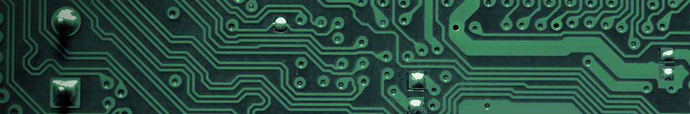

Fundamentos de Informática
Docente: Marcio Joao de Sousa Lima
Descrição
Fundamentos de Informática é o componente curricular que visa o desenvolvimento das competências necessárias para: Operação de Sistemas Computacionais.
Bases Tecnológicas
- Conceitos básicos de tecnologia da informação
- Evolução da Informática
- Representação Binária de informações
- Hardware, Software
- Sistemas Operacionais
- Redes de Computadores
- Internet e Computação Ubíqua
- Virtualização e Computação na Nuvem
- Laboratório em Sistemas Operacionais
- Criação e execução de máquinas virtuais
- Linhas de comandos
- Manipulação de Arquivos
- Execução de comandos em lote
- Processos
- Utilização de Interface Gráfica
Clique na casinha para voltar →